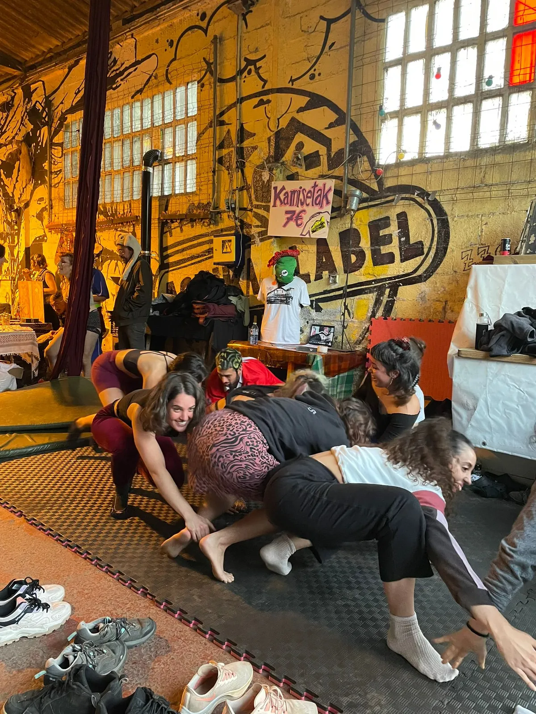
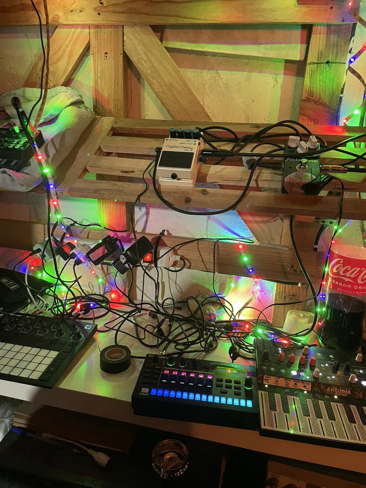

Perrafest
Belaunaldi arteko topaketa queer komunitarioa. Tailerrak, ekintza artistikoak, bizikidetza eta programazio irekia.
Bilbo, Euskadi
Elkartzeak eta jarduerak

Belaunaldi arteko topaketa queer komunitarioa. Tailerrak, ekintza artistikoak, bizikidetza eta programazio irekia.

Auzoko jaietan parte-hartzea. Kultura, auzo lankidetza eta presentzia komunitarioa Olabeagan.

Elkarrekiko laguntza artistiko-kulturalaren dispositibo esperimentala. Komunikazio eta zaintza kapsula berdinen artean.

Lankidetza kultural feministarako sare autonomoa Bizkaian. Trukea, ikusgarritasuna eta ekimenen arteko laguntza.
Lantegiak eta ikastaroak

Gaitasun teknikoa eta autonomia. Soinua, muntaia, ekipoen kudeaketa. Jakintza teknikoen demokratizazioa.

Sorkuntza grafikoa, ikaskuntza partekatua eta materialen ekoizpena tailer praktiko irekietan.

Ekoizpena, grabazioa eta DIY gailuen sorkuntza. Esperimentazio teknikoa eta sormena musikari aplikatua.
Gure burua ezagutu


Killkir Etxea Bilbon dagoen sorkuntza, dinamizazio eta esperimentazio artistiko eta kulturalerako komunitate gunea da. Kultur laborategian bihurtutako tailer mekaniko zahar batetik, musikariak, artista plastikoak eta DIY jendea elkarrekin lan egiten dute, belaunaldi arteko, inklusibo eta intersekzionala den proiektu batean. Euskadiko arte esperimentazio komunitarioko gune bakanetako bat.